Overview
In my previous post, we walked through how to get started with Microsoft Security Copilot for Intune. We deep-dived many topics such as initial configurations, why SCU’s should be considered carefully and we started to explore Copilot prompting.
But the experience is evolving (and im a little behind with this post). Security Copilot is no longer just a chat interface you impress your co-workers with. AI agents are being surfaced directly inside the Microsoft Intune admin center.
{kind=link}
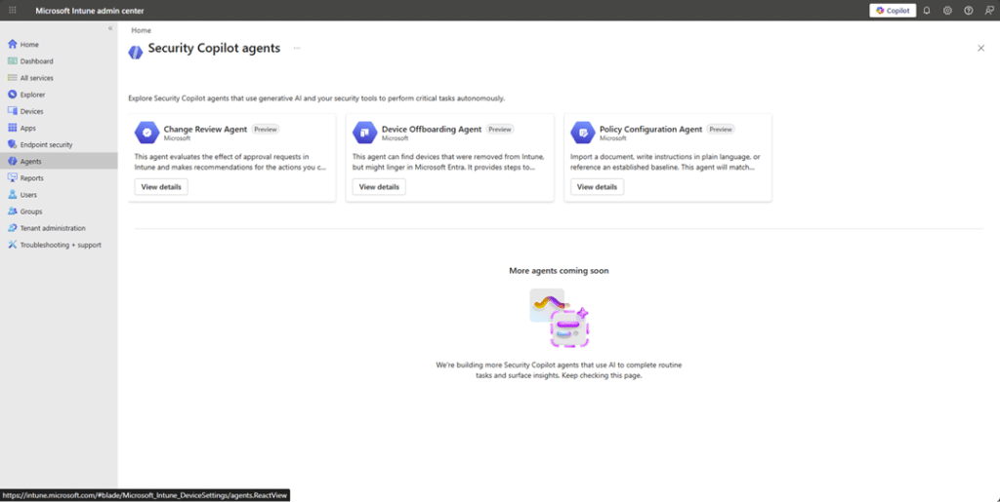
They are powered by Microsoft Security Copilot under the hood, but they don’t live in the Security Copilot portal itself, they are embedded directly in the Intune experience.
It’s also worth calling out that these Intune Security Copilot agents are not the same as the agents you might see in Microsoft Entra. The naming overlap, like “Access Review Agent”, can make it feel like they’re related, but they’re separate, workload-specific agents.
{kind=link}
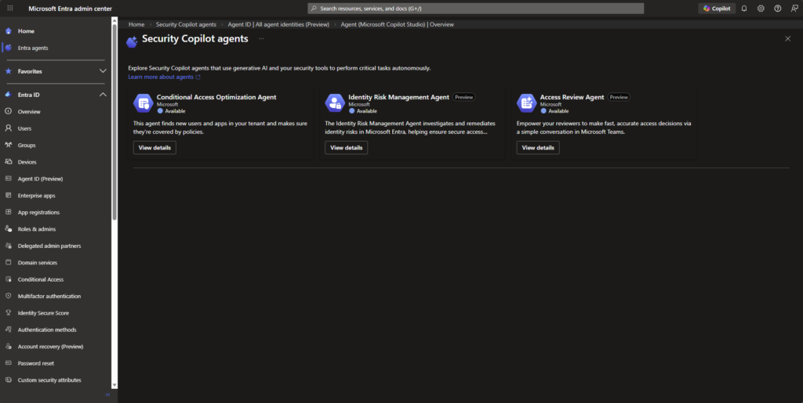
Still very early days for these agents. Microsoft have given us 4 agents to play with, most of us will only see 3 unless you are taking part in the early preview for the Vulnerability Remediation Agent.
What Agents can we play with?
The agents are extremely well documented at https://learn.microsoft.com/en-us/intune/agents/, so im not not going to copy pasta that effort in this post, but ill give a hat tilt to them nonetheless.
Change Review Agent
The Change Review agent is designed to help you review Multi-Admin Approval requests, currently focused on PowerShell scripts, before you approve or reject them.
Instead of manually digging through context, checking risk signals, and trying to decide if something feels safe, the agent pulls together signals from Defender, Entra ID and Intune to give you a recommendation with reasoning. You still make the final decision…nothing is auto approved! My take on this is instead of implicitly trusting a script John created because John know’s his PowerShell, the Agent looks at measurable signals to give you more insight into the script John wants approval for.
You manually run it from the Intune admin center. Each run evaluates up to ten pending approval requests and provides risk based insight explaining what it found and why it is suggesting a particular action.
Read more at https://learn.microsoft.com/en-us/intune/agents/change-review-agent.
In this example, John’s team are using the Multi-Admin Approval feature in Intune and John wanted to push out a platform script to wipe devices…John’s coffee was tainted today.
When we click into the Change Review Agent, we can see that no one has approved the request yet, unsuprisingly.
{kind=link}
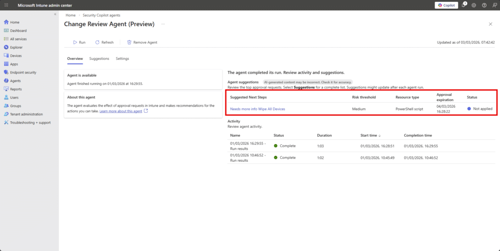
But the Change Review Agent still reviewed the request and tried to look at signals across Intune, Entra and Defender to summarise the event.
{kind=link}
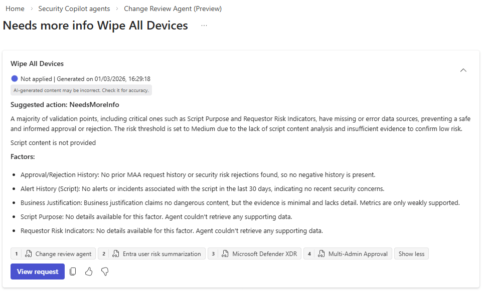
{kind=link}
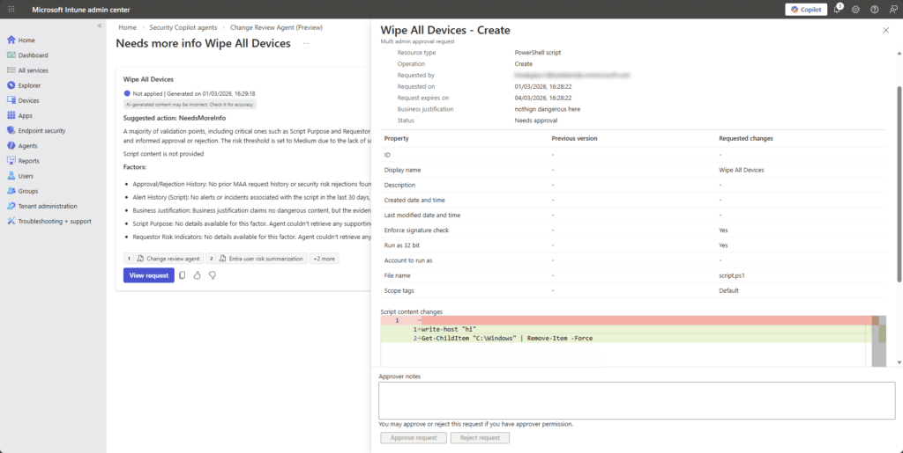
In this example, John submitted a clearly destructive (yet untested) PowerShell script through the Intune Multi-Admin Approval workflow. The Change Review Agent evaluated it. The script included a command that attempts to remove items from the C:\Windows directory, yet the agent returned a “NeedsMoreInfo” recommendation rather than classifying it as high risk.
Although the script content was visible in the approval request, the Agent indicated that key validation signals such as script purpose and supporting data were missing, and it defaulted to a medium risk posture. This suggests that in its current state, the agent may not be performing deep analysis of the script body and is instead relying primarily on metadata and contextual signals when generating its recommendation.
Maybe im being too optimistic. Reflecting on this behaviour, it may actually be consistent with how the Change Review Agent is currently designed. The Agent aggregates external risk signals from Defender, Entra and Intune then evaluates PowerShell scripts using predefined logic rather than fully autonomous semantic reasoning.
Its recommendations are advisory and limited to the signals and evaluation rules available at runtime. If critical validation inputs or supporting data cannot be confidently assessed,the documented behaviour is to return “Needs more info” rather than assume high risk. Given that the Agent relies on signal aggregation rather than a deeper script-level modeling, this outcome may be expected for now. From a human perspective, the script is obviously suspicious. If John actually deployed that, he may have lost a few friends on the team. We approved it to see whether the signals would change.
{kind=link}
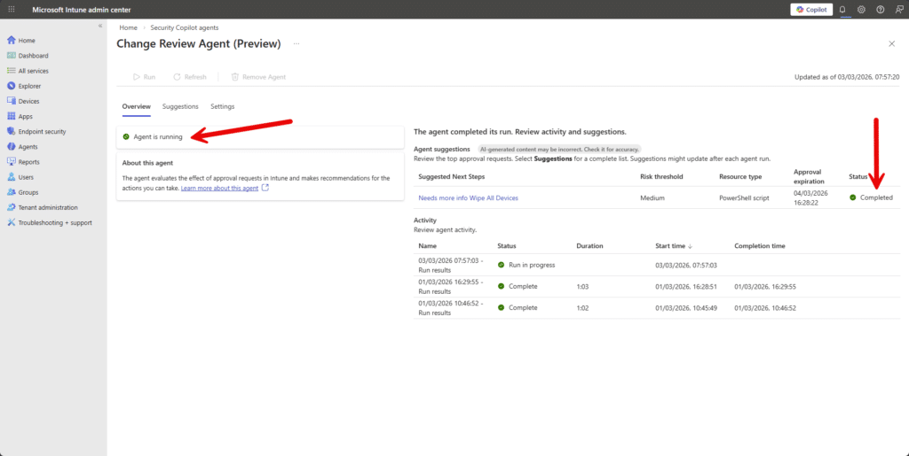
Nothing new. Same risk factors.
{kind=link}
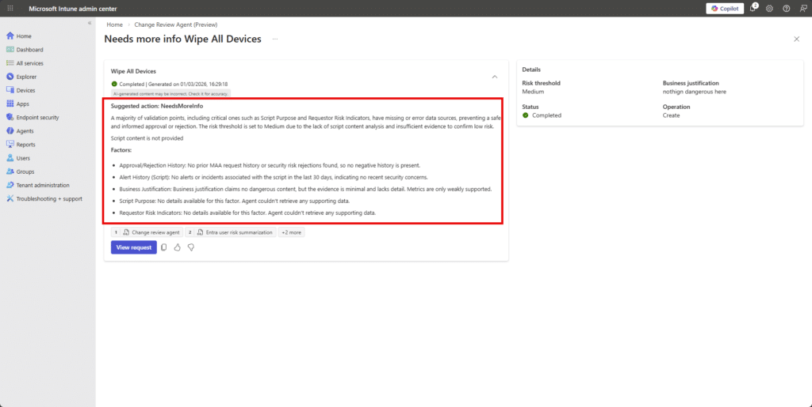
I mean, Copilot can check script based-content, but the Agent doesnt do that. I asked ChatGPT if the script content was dangerous:
{kind=link}
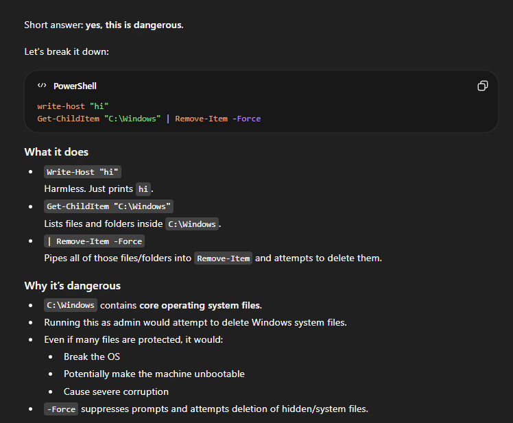
Nothing changed. The same risk factors were presented.
My takeaway from this test is that the Change Review Agent does not currently appear to treat the script body itself as a strong evaluation signal. It seems to rely primarily on identity risk, historical approvals, and Defender insights rather than deep content analysis of the PowerShell logic.
That said, this is still a preview capability. The agent is designed around structured signal aggregation and predefined evaluation logic, not full semantic reasoning over John’s arbitrary, but dangerous, script content. Copilot-style large language models can absolutely assess script intent and flag destructive behaviour, but this particular Agent does not appear to be operating at that level of analysis yet.
If anything, this test highlights a potential improvement opportunity…that is to incorporate stronger script-level risk classification as part of the evaluation pipeline.
Device Offboarding Agent
Short version? Don’t build anything new around it. Microsoft has announced that the Device Offboarding Agent will be retired.
The Device Offboarding Agent is never going to make it out of preview (sad pause). It’s aim was to help admins spot devices that looked stale, duplicated, or out of sync between Intune and Entra ID before removing them. Instead of automatically deleting anything, it surfaced insights, acting as a second set of eyes so John didn’t accidentally offboard a perfectly healthy device because it “looked a bit old”. It was meant to help with messy lifecycle clean-up, but it’s being retired in 2026, so it’s not something to build a long-term process around.
Timeline
- April 30, 2026: You can no longer set it up.
- June 1, 2026: It is removed from the Intune admin center.
If you already have it configured, you can continue using it until early June 2026, but once removed, it’s gone.
Policy Configuration Agent
The Policy Configuration Agent in Intune helps turn complicated security documents into actual Intune settings (thats teh headline at least). Instead of John reading a 200 page NIST or STIG document with 3 coffees and mild regret, he can upload the document and let the agent map the requirements to real settings in the Intune Settings Catalog.
It reads the text, figures out what controls are being asked for, suggests the matching configuration settings, and builds a draft policy. Nothing is applied automatically. You review the suggestions, tweak anything that doesn’t fit your environment, remove what you don’t want, and then create the policy like normal.
Again, you manually invoke the Agent from the Intune admin center.
{kind=link}
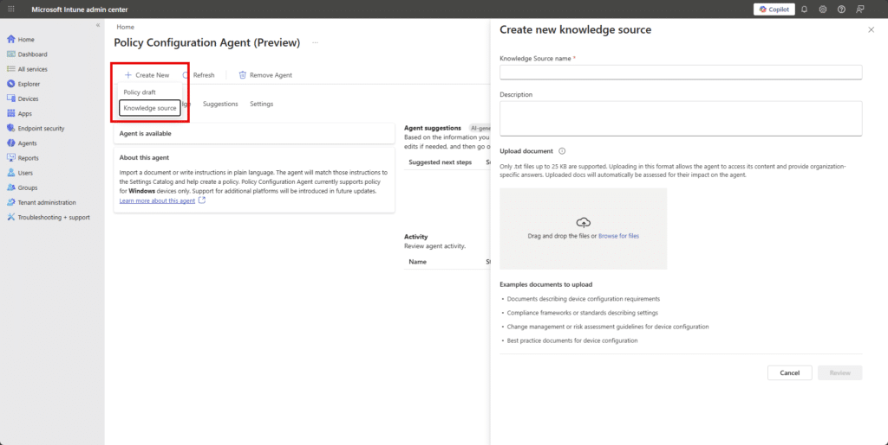
Before John creates a policy, he starts by creating a “Knowledge Source” and uploads his document whether that is NIST guidance, a STIG, CIS benchmark. John grabs some examples from https://www.cyber.mil/stigs/gpo/
{kind=link}
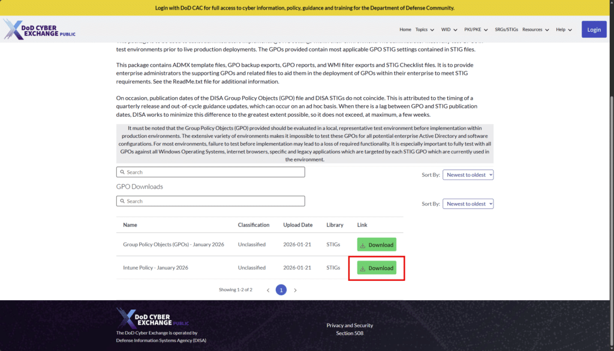
Lets try the DoD STIG-based requirement to disable Internet Explorer 11. The Agent ingests txt files only so im simply renaming the policy json to .txt in this example.
{kind=link}
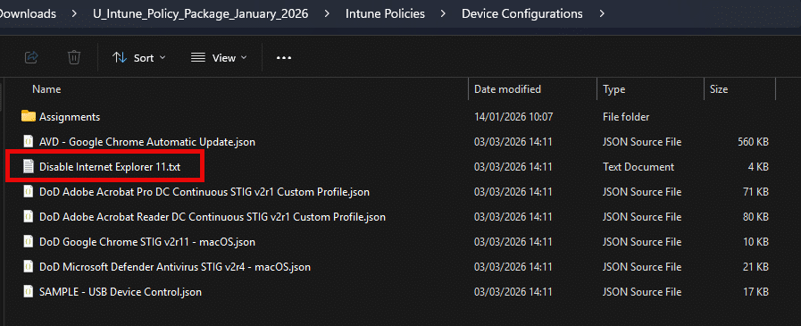
{kind=link}
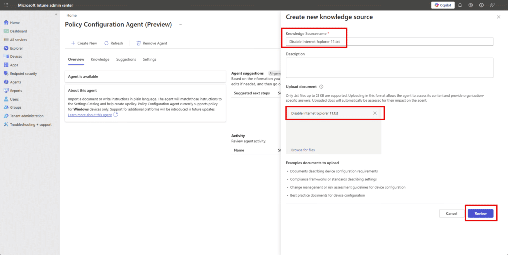
The agent then analyzes the file and maps the written or policy structured requirements to real Intune settings, showing the setting name, the proposed value, the original requirement text, and a confidence score.
{kind=link}
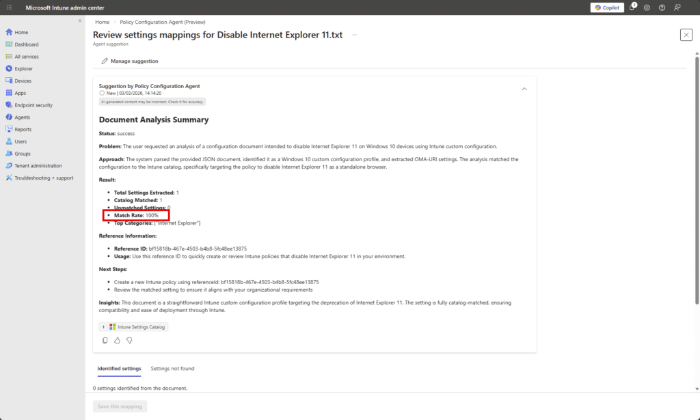
The agent successfully parsed the file, identified the requirement to disable IE11 as a standalone browser, and mapped it directly to an available Intune Settings Catalog configuration…. not so fast John…zoom in!
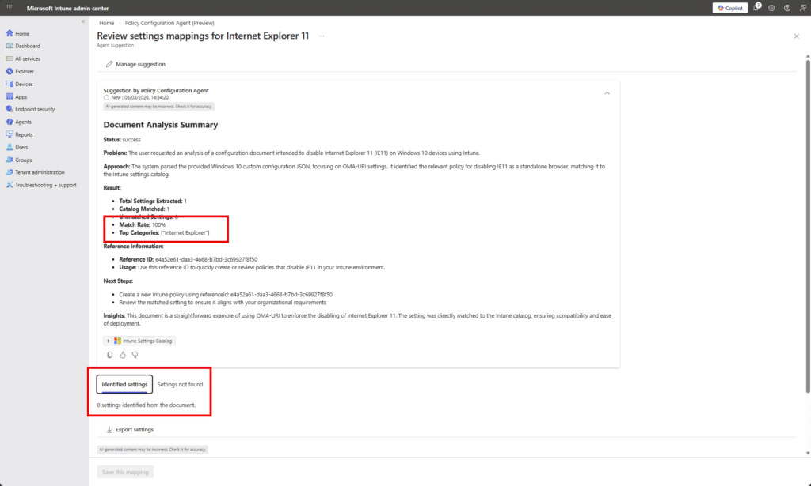
At first glance, the analysis looks perfect: 1 setting extracted, 1 catalog match, 0 unmatched, and a shiny 100% match rate. On paper, that suggests the DoD STIG requirement to disable Internet Explorer 11 cleanly maps to a native Intune Settings Catalog policy.
But when we scroll down to Identified settings, it says 0 settings identified from the document.
So what happened?
The agent believes it successfully matched the requirement to a catalog setting, but the detailed mapping output didn’t actually materialize into a concrete, surfaced setting in the Identified settings tab. In other words, the high-level analytics say “100% match”, yet there is no actionable configuration listed to review or save.
Confused? Me and John are too. This suggests a disconnect between what I am calling the classification layer (which calculated the match rate) and the rendering layer (which should show the mapped setting). It may have recognized the intent “Disable Internet Explorer 11” and associated it with a known category, but failed to produce or expose the actual Settings Catalog entry in the UI.
Lets try with natural language instead of a json policy structure. This is the content of my next txt file.
Disable Internet Explorer 11 as a standalone browser on all Windows 10 and Windows 11 devices. Internet Explorer 11 must not be accessible to users. Prevent users from launching iexplore.exe directly. Ensure Internet Explorer 11 is disabled using supported Windows policy settings and enforce this across all managed endpoints.
While that cooks, how are we doing with SCU usage (I’m watching it like a hawk).
{kind=link}
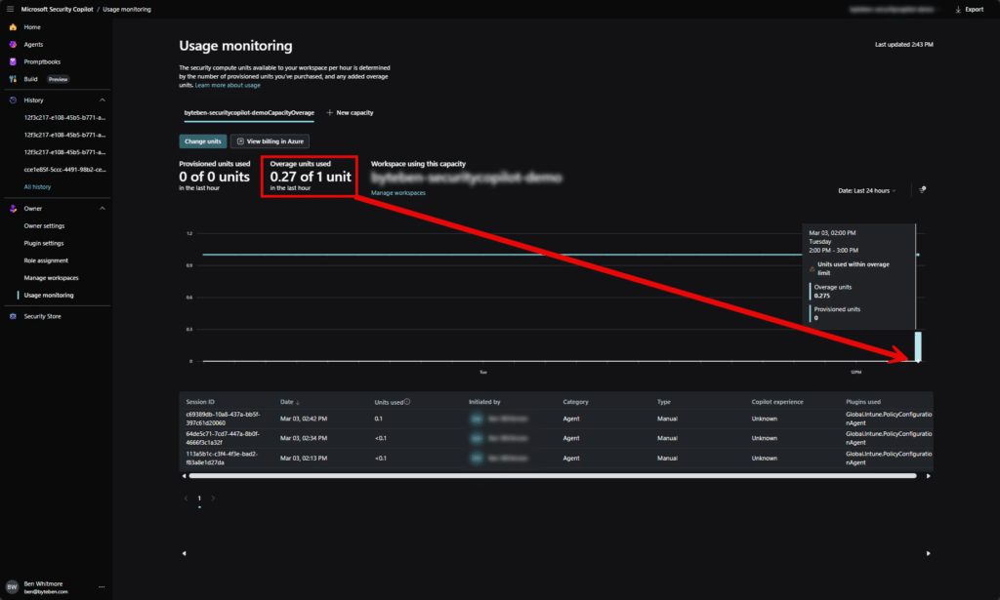
So far… reasonable. You can see we’re slowly burning through Security Compute Units with each agent run. Nothing dramatic, but definitely not free. Every time we run an agent, we’re effectively consuming Security Copilot compute in the background.
This highlights the symbiotic relationship between the Intune agents and Microsoft Security Copilot capacity. The agents in the Intune admin center aren’t doing magic locally…they are (using “their” feels weird like im refering to AI as a person) backed by Copilot compute in your Security Copilot workspace. No SCUs, no agent reasoning.
In our case, the workspace is configured for overage SCUs only. That means we don’t maintain pre-provisioned capacity. Instead, compute spins up on demand when an agent runs. It’s convenient, and Copilot handles the scaling automatically, but it comes at a higher per-SCU cost because we’re not keeping compute “warm”.
So yes, the agents are working… but John’s also quietly feeding the SCU meter every time he clicks “”Run”.
Back to the Knwoledge Source. Boom…we have matches!
{kind=link}
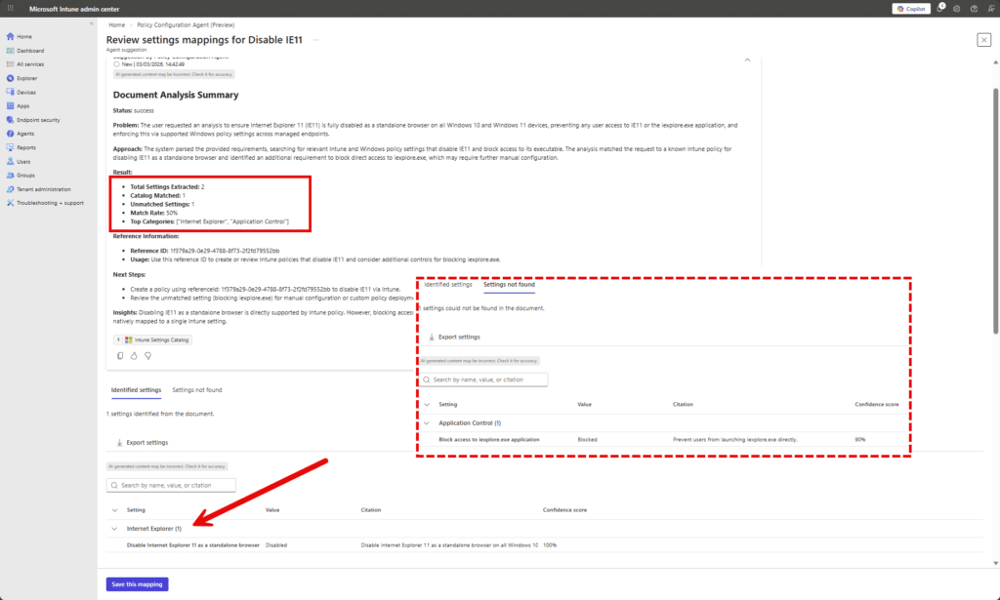
Instead of feeding the agent a perfectly formatted but slightly robotic STIG document, we gave it a human sandwich. The result actually made sense. The agent extracted 2 requirements, mapped one cleanly to the Intune Settings Catalog with 100% confidence, and mapped the second to Application Control with high confidence. Most importantly, the settings actually appeared in the Identified settings section. No mysterious “100% match but nothing to show” moment. Moral of the story… sometimes plain English beats perfectly structured compliance docs…for this Agent at least it seems.
Now that we have a knowledge source, we can use that to ask the Agent to create the policy draft.
{kind=link}
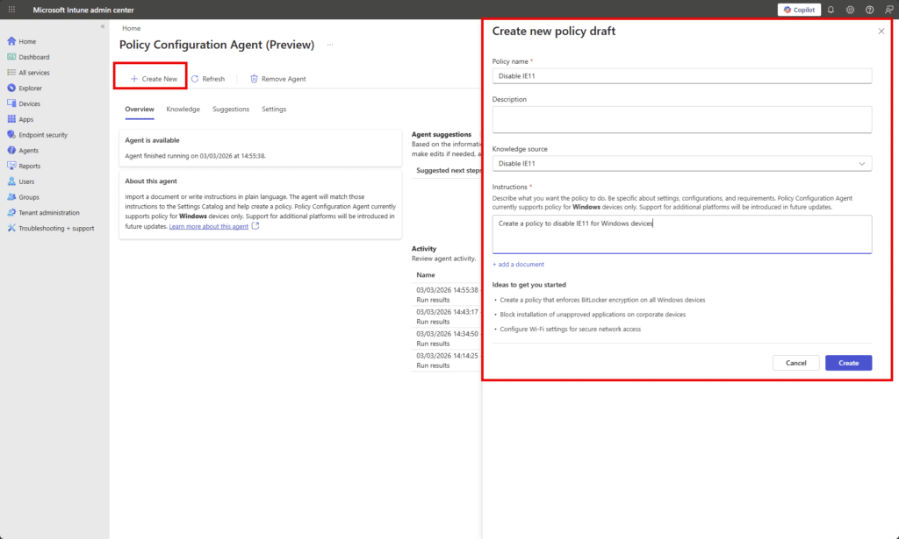
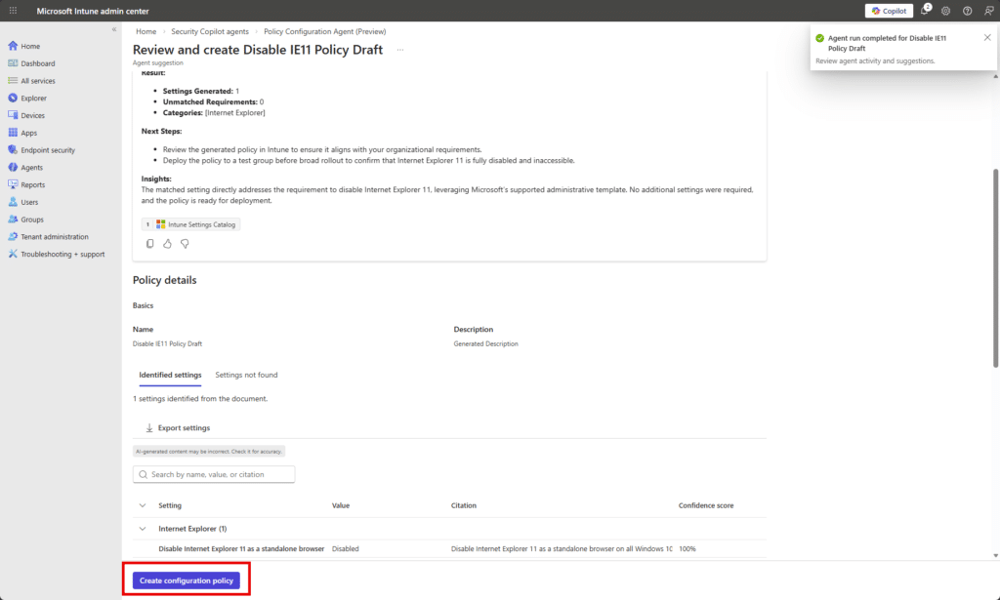
Clicking Create Configuration Policy takes me through a typical Settings Catalog configuration flow.
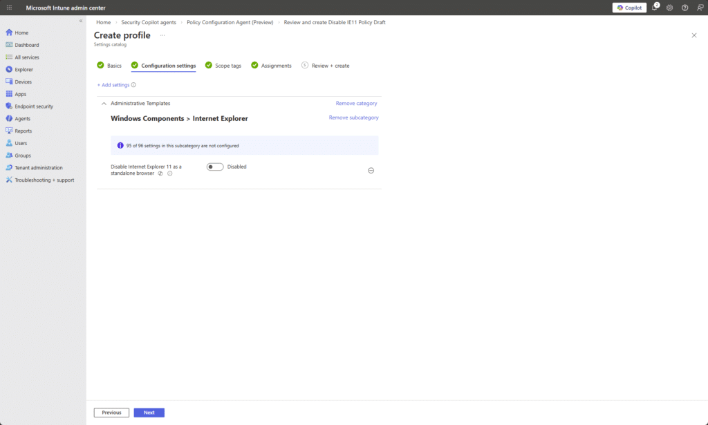
Reflecting on this, I probably gave the agent a fairly lightweight example. Disabling IE11 is hardly a PhD-level compliance challenge. So yes, it performed well with clear natural language input, and the mappings made sense. But that was a controlled test. The real question is how it behaves when John throws something heavier at it, like “Make Windows 11 secure but usable”, backed by a chunky baseline document with layered requirements, exceptions, and vague human wording.
Vulnerability Remediation Agent
The Vulnerability Remediation Agent is currently in a limited public preview and only available to a select group of customers. If you’re interested in access, you’ll need to contact your Microsoft sales team for details and next steps.
The agent uses Microsoft Defender data to monitor device vulnerabilities and applies AI-driven risk assessment to help prioritize remediation efforts. It surfaces contextual insight in Intune so administrators can focus on the most impactful security gaps rather than manually correlating Defender findings and device state.
Learn more at https://learn.microsoft.com/en-us/intune/agents/vulnerability-remediation-agent
Final Thoughts
That’s my honest, and very short, take on Intune Agents right now.
They’re (their) (are they humans?) intersting. “They are” contextual. And they feel like more than just a chat window like the mebedded Copilot experience. These agents live inside the Intune admin center and are starting to plug directly into real workflows. That part I really like.
But it is still early.
They are in preview and you can feel that in places. The Change Review Agent feels like it is one good iteration away from being very powerful, especially if it starts treating script content itself as a stronger risk signal. The Policy Configuration Agent shows promise, particularly when you give it clear plain English instead of a compliance document written like it was drafted in 2003. The Vulnerability Remediation Agent looks interesting too, even if most of us cannot touch it yet.
What I like most is the direction. These are not random AI features bolted on top. They are contextual assistants sitting inside the workload. They do not auto approve anything. John still owns the decision. That matters. But there are still real questions.
How much is this costing me in SCUs…Is the value worth the burn rate…Should I just understand this stuff properly myself?
The honest answer is yes to all of that.
You still need to understand Intune. You still need governance. The agents do not replace thinking. They support it.
Overall, I like where it is going. It feels like another useful tool in the toolbox. It needs community feedback. It needs more real world testing. And John will absolutely keep pressing Run while quietly watching the SCU graph like it is his electricity bill in winter.